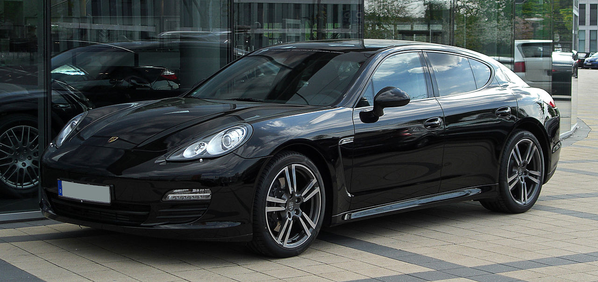

Porsche Panamera łopis
Porsche Panamera - samochód osobowy typu fastback wytwarzany przez niemiecką markę Porsche od 2009 roku. Nazwa pojazdu podobnie jak Porsche Carrera pochodzi od nazwy legendarnego wyścigu La Carrera Panamericana. Od 2016 roku produkowana jest druga generacja pojazdu, a od 2017 roku wytwarzana jest druga odmiana nadwoziowa - pierwsze w historii marki kombi.
Porsche Panamera dane techniczne
Segment F Typy nadwozia 4-drzwiowy fastback Silniki Benzynowe: 3,6 V6 300 KM 4,8 V8 400 KM 4,8 V8 Turbo 500 KM i 550 KM Diesla: 3,0 V6 250 KM Skrzynia biegów 6-biegowa manualna 7-biegowa automatyczna ZF (PDK) 8-biegowa automatyczna Rodzaj napędu tylny AWD Długość 4970 mm 5010 mm (od 2013 ) Szerokość 1931 mm Wysokość 1418 mm Rozstaw osi 2900 mm Masa własna 1730 - 1970 kg Poj. zbiornika paliwa 80 l 4S, Turbo: 100 l Liczba miejsc 4 - 5 Pojemność bagażnika 445/ 1263 l 335/ 1153 l (S E-Hybrid) Silniki Benzynowe: 3.6 V6 300 KM (261 km/h) - Panamera i Panamera 4 4.8 V8 400 KM (285 km/h) - Panamera S i 4S 4.8 V8 430 KM - Panamera GTS 4.8 V8 twin turbo 500 KM (303 km/h) - Panamera Turbo 4.8 V8 twin turbo 550 KM (306 km/h) - Panamera Turbo S Diesla: 3.0 V6 turbodiesel 250 KM (242 km/h) - Panamera Diesel 3.0 V6 turbodiesel 300 KM (259 km/h) - Panamera Diesel[7] Hybrydowe: 3.0 V6 333 KM (270 km/h) + elektryczny 47 KM = 380 KM - Panamera S Hybrid Wersje pojazdu Panamera Platinum Edition Diesel - produkowany od maja 2011 roku; auto wykorzystuje ten sam silnik Diesla co Porsche Cayenne Diesel Platinum Edition 4 4 Platinum Edition S 4S S Hybrid - produkowany od lutego 2011 roku S E-Hybrid - premiera w 2013 roku (silnik 416 KM + silnik elektryczny 95 KM) GTS Turbo Turbo S Exclusive
